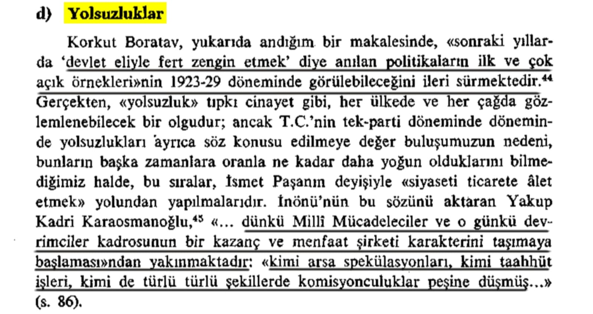
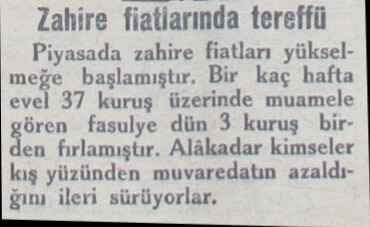
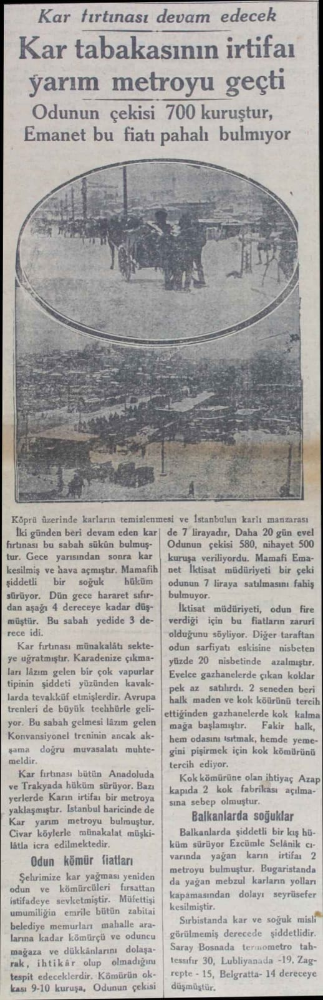
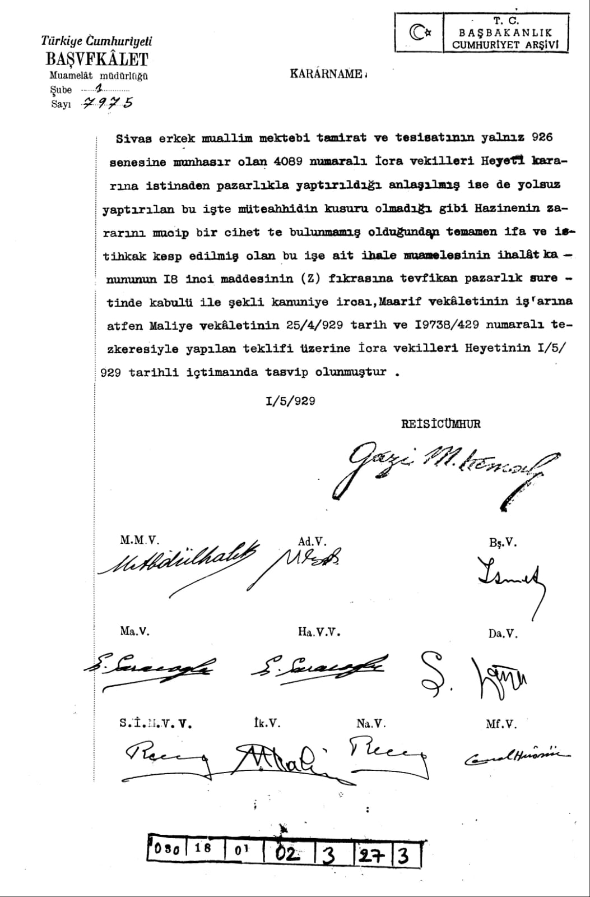
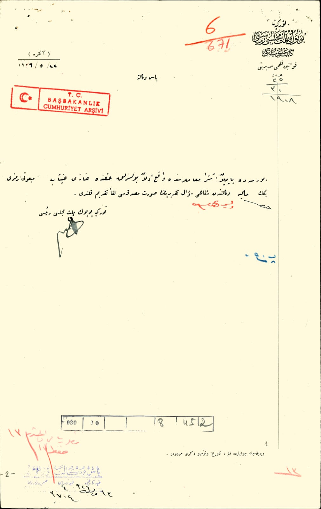

📚 Mete Tunçay, Türkiye Cumhuriyeti'nde Tek Parti Yönetiminin Kurulması, s.206

*📌 Fasulye fiyatının bir gün içerisinde 3 kuruş birden yükselmesi.*
📚 Akşam Gazetesi, 23 Ocak 1929, s.1

**📌 Odunun çekisi 500 kuruşdan 20 gün içerisinde 7 tl yükseldi, İktisat müdüriyeti bu fiyatı fahiş bulmadı. **
📚 Akşam Gazetesi, 22 Ocak 1929, s.1

**📌 Sivas Erkek Öğretmen Okulu'nun onarımı ve tesislerin yapımında yolsuzluk olmasına rağmen kanuna uygun şekilde kabulü. **
📚 1 mayıs 1929 Tarihli Atatürk İmzalı Kararname

**📌 Bursada yapılan ... muamelesinde vaki olan yolsuzluk hakkında gazianteb mebusu refik beğ maliye vekaletine şifahi(sözlü) ... takririnin suret-i masrukası ... takdim kılınır.
Türkiye Büyük Millet Meclisi Reisi **
📚 Cumhuriyet Arşivi, 30-10-0-0, 8-45-2